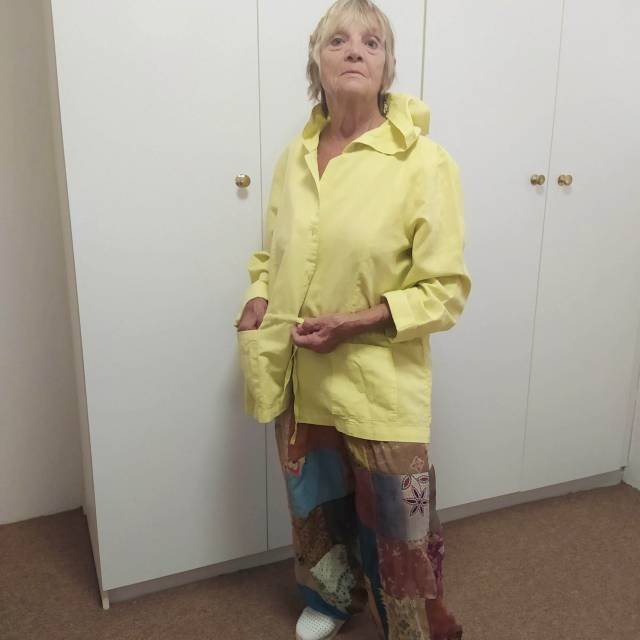

The Grumpies
The Grumpies
Mike’s back has now taken its toll of all the heavy lugging and lifting of cases. Home exercises rather than improving the situation only exasperated the condition. A local osteopath confirmed that he had damaged a muscle causing the pain which extended to the shoulder. Light exercise and much rest were prescribed. Unfortunately, the patient, doesn’t understand these two requirements, so recovery will take a long time. So now a ’grumpy ole man’
I also needed some medical advice, as a head/ear condition undiagnosed in France, given temporary relief in Spain so I could cope with the long flights to Cape Town) was still bothering me. So now a ‘grumpy ole lady.’
The Greyton GP was not recommended so we travelled to Caledon, a 25 minute trip, to see another. I went with great trepidation and hoped his English was good, as Afrikaans is way beyond my understanding. What a pleasant surprise! An absolutely charming man with smiling eyes and a very reassuring welcome. A very efficient practice too… Just hope our insurance is as effective. I am now registered and left the chemist with 4 bags of goodies to try. All clearly labelled and placed in sealed package. I must call if any side effects and return in 10 days if no relief.
One of our worries was finding a doctor in a strange country. That’s one fear allied. In the 10 years Dan and Catherine have been here they’ve never needed one, Catherine being a Dr. of Phytotherapy. (treatment with herbal medicine ), they’ve successfully self medicated
Our bank, also in Caledon, was our next visit. Our current and savings account was set up 3 years ago . We needed to transfer money from the former to the latter in order to pay our rent, and to have a credit card for convenience. Sounds a simple enough procedure.. But… Oh no.. Nothing’s easy…… .
Put in a private room…. A phone number was pressed for us, and we were left to talk to the authority, whoever that may be. An interminable wait.. Now know what ‘Strictly come dancing’ contestants feel like!
Finally through… Apparently we cannot control our own payments. They have to be referred for approval and paid by the ‘authority’. Even the teller could not explain this. No bank card either.. Must await delivery…… . Aggghhjjj!!
Caledon, our nearest administrative town, houses a large indigenous population, [over 13000], both within the town and in a sprawling township close by . These folk are the epitome of slow movers, yet walk for miles carrying their bags of shopping and other goods in their hands, with their backs or on their heads, seemingly always cheerful and resting wherever and whenever the need or mood dictates.
Caledon lies in the valley of the Overberg Mountains. It boasts mineral rich water springs ,which have fostered the development of an inspiring Spa Centre . Here for a moderate charge you can soak your worries and pain away. Sadly not during Covid, so not for us this time.
Friday 16th January
Went to Hermanus to do our ‘big shop’ mainly in Woolworths.. an equivalent of Sainsbury here.
First we shopped for a birthday present. Found a lovely light linen lime green jacket…. Not my usual market gear.. but why not.. It’s my birthday after all !

After wandering the shops, we stopped for, which proved to be an absolutely delicious sea food platter in outside sea front restaurant.
Started well but the Cape wind began its frolics, and invited some English rain to join it. In danger of losing all our lunch to the sea birds we moved under shelter just in time.
Then on to buy provisions. Just in the aisles choosing when plugged into darkness. We’d forgotten about South African ’ load shedding’, which means that each district has a certain for-warned time of losing power to save energy. Can last up to 4 hours. out came our phone lights..wow getting into this technology lark now! Then the generator kicked in and we could swap our potatoes we didn’t want for the carrots we did want…..
Next stop ..indoor fish market.. Where we choose freshly caught fish of the day which was gutted and filleted for us.. Also freshly fried fish n chips while you wait….
On to the lamb farm on the way home for organic sausages, neck and leg of lamb. All fresh..
A lovely drive through the mountains back to Greyton to collect the keys for our new abode at 43 Park Street.
Dammnnn!…. Spent too much time shopping and agent was closed. Already left Cob Cottage. However with the always good will of the village we were able to phone Beverley’ the agent, at home and she returned with the keys.
We exhaustedly moved half our stuff in leaving rest at Dan’s. Did we need our bed that night?
Only a month to catch up on and we’ll be up to date !
Bye
MnM xx